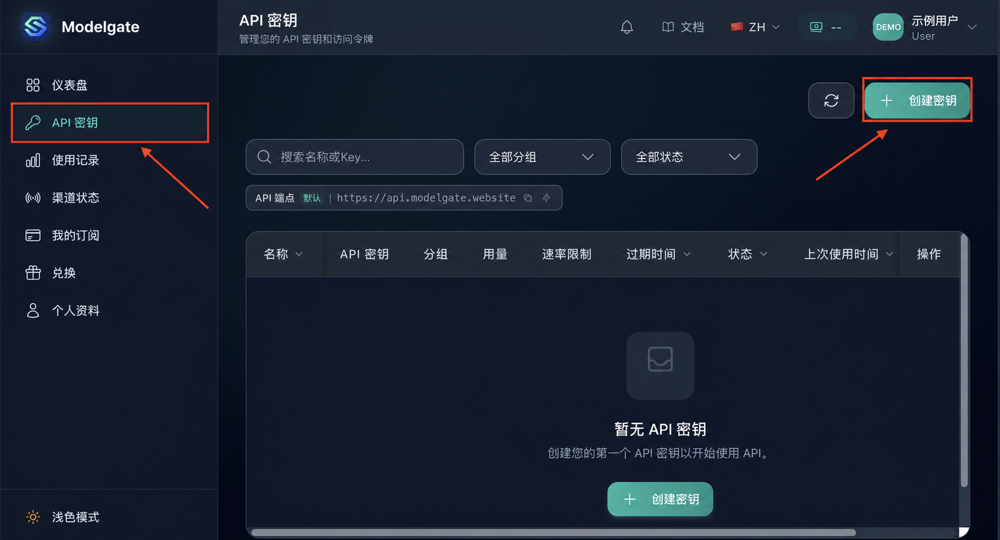
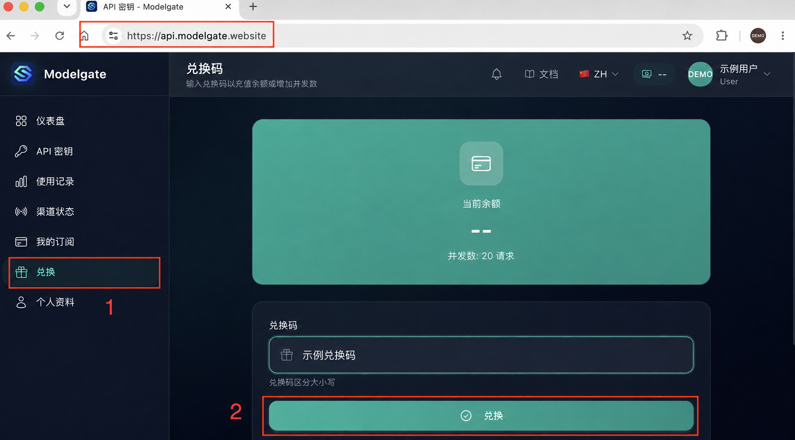
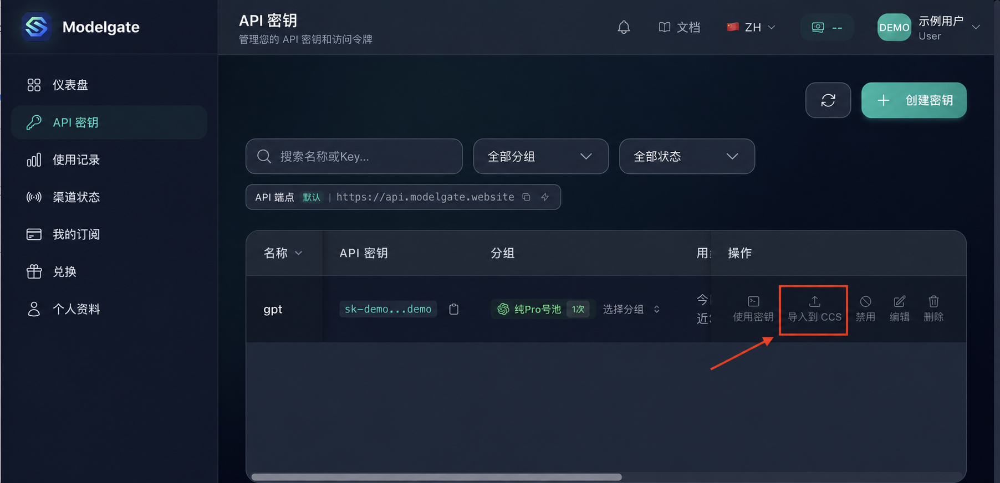
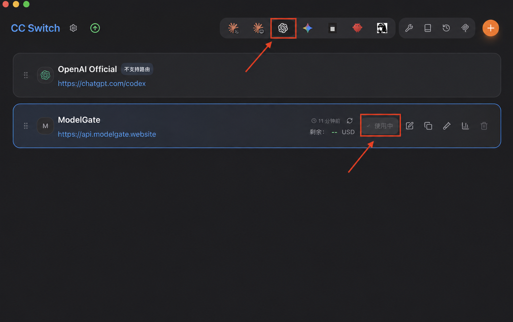

账号、额度、密钥
在控制台完成兑换与密钥创建，让每一步都有明确入口。
ModelGate × Codex
把注册、额度、API 密钥和客户端配置串成一条清晰路径。通过 CC Switch 导入并启用，不需要手工翻找配置文件。
Why ModelGate
不只是给你一个地址，而是把 Codex 接入过程中最容易卡住的环节放进同一条操作链路。
在控制台完成兑换与密钥创建，让每一步都有明确入口。
从控制台进入配置流程，减少手工编辑本地文件带来的出错概率。
真实界面截图经过脱敏处理，照着步骤即可完成接入。
How it works
Control Center
展示使用过程，而不暴露使用者。公开截图中的账号、余额、兑换码与密钥均已替换为无效示例。

Full Guide
教程完整保留。按顺序操作，最后务必彻底退出并重新打开 Codex。
注册并登录后，打开“兑换”页面，输入购买的兑换码完成兑换。

创建密钥，选择对应号池，然后点击“导入到 CCS”。
密钥创建完成后，点击“使用密钥”，进入客户端配置页面。

在 CC Switch 页面点击“启用”，随后彻底退出并重新打开 Codex。
